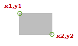

© 2015-2016 General Electric Company. All rights reserved.
© 2015-2016 General Electric Company. All rights reserved.The APIs in this section provide location and resource information for assets used to monitor parking occupation, pedestrian movements, situational awareness, and traffic flow for Cities; and environmental factors, such as CO2, humidity, illuminance, occupancy, and temperature, and indoor positioning information for Enterprises.
Each general API provides additional data in the response details. You need to run one or more of the APIs in this section before using the Intelligent Cities and Intelligent Enterprises APIs, which match the use cases. Each use case is described in its individual subsection.
Each of the APIs are connected to a JAVA app simulator, which simulates city and enterprises data that mimics data from the node.
| Simulated Data Stream | Bounding Box / Location | Range and Frequency |
|---|---|---|
| PEDESTRIAN | 32.715675:-117.161230,32.708498:-117.151681 |
|
| TRAFFIC | 32.715675:-117.161230,32.708498:-117.151681 |
|
| PARKING | 32.715675:-117.161230,32.708498:-117.151681 |
|
| MEDIA | 32.715675:-117.161230,32.708498:-117.151681 |
|
| INDOOR POSITIONING | Location UID | VLC coordinates are generated between 8 AM – 6 PM UTC every day. Therefore, all the analytics work during this time range. Simulated data is kept up to 1 week. |
ENVIRONMENTAL
|
Location UID | Sensors generate an Occupancy event every 1 minute, if there is occupancy. Sensors generate Temperature and Light Level events every 15 minutes. Simulated data is kept up to 1 week. |
This API returns a list of assets deployed within a bounding box (bbox) that you define with GPS coordinates.
| METHOD | GET |
| Request URI | {{metadataurl}}/v2/assets/search?bbox=<long,lat>&page=<int>&size=<int>&q=assetType:<assetType1>&eventType=<eventType1>&mediaType=<mediaType1> |
| Sample Request URI | {{metadataurl}}/assets/search?bbox=32.715675:-117.161230,32.708498:-117.151681&page=0&size=50&q=assetType:CAMERA&eventType=PKIN |
| Parameter | Description | Required? | Filter Values |
|---|---|---|---|
| bbox | The bounded area for your search, identified by GPS coordinates. | Cities: Yes Enterprises: No |
bbox=x1:y1, x2:y2 Replace x1:y1, x2:y2 with GPS coordinates, similar to the following: 32.715675:-117.161230,32.708498:-117.151681 You can use Google Maps to obtain the latitude and longitude. To locate GPS coordinates for the area and identify the boundaries, place the cursor in the upper left location of the area, then right-click and select What’s here? to obtain the first set of coordinates. Right-click on the lower-right location and repeat this procedure to obtain the second set of coordinates.  |
| q | Identifies a "type" query. | No | Query to search by assetType, mediaType, or eventTypes. |
| assetType | Filter by type of asset. Note: CAMERA is the only sensor that will generate eventType and mediaType.
|
No | Insert one of the following enumeration codes to filter by a specific asset type.
|
| mediaType | Filter by type of media. Note: Get Media only works when you have access to Situational Awareness.
|
No | Insert one of the following enumeration codes for a specific media type.
|
| eventTypes | Filter by type of event. | No | Insert one of the following enumeration codes for a specific event type.
|
| size | Maximum number of records to return per page; if none specified, the default value of 2 is used automatically. | No | Numerical value, such as 20. |
| page | Indicates the page number; default is 0. | No | Numerical value, such as 1. |
| Parameter | Data Type | Description |
|---|---|---|
| assetUid | String | A unique identifier established by a customer or external resource. For example, CAMERA-STG-HYP1042-CAM-L to identify a camera. |
| parentAssetUid | string | A unique identifier assigned to the asset at the top of a hierarchical set of assets, in other words, the parent of a child asset. For example, a node is a parent asset, comprising child assets such as cameras or microphones. |
| eventTypes | String | The event type that was recorded. In the sample response data, the camera on the specified node is collecting data on parking instances (vehicle in, vehicle out) and traffic flow in the parking area.
|
| mediaType | String | Media output. In the sample response data, the camera on the specified node is collecting video to record when vehicles enter and exit a parking space.
|
| assetType | String | Type of asset that is recording the events.
|
| coordinates | String | The GPS coordinates (latitude, longitude) for the referenced asset (identified by assetUid), such as 32.711653,-117.157314 to identify where the camera is installed. |
{
"content": [
{
"assetUid": "STG-HYP1087-170",
"parentAssetUid": "POLE-HYP1087-43",
"eventTypes": [
"TFEVT",
"PKIN",
"PEDEVT",
"PKOUT"
],
"mediaType": "IMAGE",
"assetType": "CAMERA",
"coordinates": "30.328126000000001:-81.6596200000000039"
},
],
"last": true,
"totalElements": 6,
"totalPages": 1,
"numberOfElements": 6,
"first": true,
"sort": null,
"size": 50,
"number": 0
}
This API returns details on a particular asset.
| METHOD | GET |
| Request URI | {{metadataurl}}/v2/assets/{assetUid} |
| Sample Request URI | {{metadataurl}}/v2/assets/CAMERA-STG-HYP1042-CAM-L |
| Parameter | Description | Required? | Filter Values |
|---|---|---|---|
| assetUid | GE identifier for an asset. | Yes | For example, CAMERA-STG-HYP1042-CAM-L |
| Parameter | Data Type | Description |
|---|---|---|
| description | String | Description of the asset. |
| properties | String | Properties of the asset.
|
| assetUid | String | A unique identifier established by a customer or external resource. For example, CAMERA-STG-HYP1042-CAM-L to identify a camera. |
| parentAssetUid | String | A unique identifier assigned to the asset at the top of a hierarchical set of assets, in other words, the parent of a child asset. For example, a node is a parent asset, comprising child assets such as cameras or microphones. |
| eventTypes | String | Insert one of the following enumeration codes for a specific event type.
|
| mediaType Note: Get Media only works when you have access to Situational Awareness.
|
String | Insert one of the following enumeration codes for a specific media type.
|
| assetType | String | Insert one of the following enumeration codes to filter by a specific asset type.
|
| coordinates | String | The GPS coordinates (latitude, longitude) for the referenced asset (identified by assetUid), such as 32.711653,-117.157314 to identify where the camera is installed. |
| status | String | Status of the asset that is recording the events.
|
{
"description": "This is a CAMERA",
"properties":
{
"HOMOGRAPHY": "-0.00144262851012974,0.02453062516689878,64.20463131147713,4.028365976010364E-4,-0.006849374117427758,-17.9267206480953,1.23148222457587E-5,-2.093831593825796E-4,-0.5480243058217796",
"CENTER_GEO_COORDINATE": "32.7116098:-117.1565843",
"IMAGE_SIZE": "320:640",
"COLOR_TYPE": "COLOR",
"VIEW": "88.0"
},
"assetUid": "CAMERA-STG-HYP1042-CAM-L",
"parentAssetUid": "NODE-STG-HYP1042",
"eventTypes": [
"PEDEVT"
],
"mediaType": "IMAGE,VIDEO",
"assetType": "CAMERA",
"coordinates": "32.711628:-117.156618",
"status": "ONLINE"
}
This API returns a list of locations within a bounding box (bbox) that you define with GPS coordinates.
| METHOD | GET |
| Request URI | {{metadataurl}}/v2/locations/search?bbox=<long,lat>&page=<int>&size=<int>&q=locationType:<locationType1> |
| Sample Request URI | {{metadataurl}}/locations/search?bbox=32.715675:-117.161230,32.708498:-117.151681&page=0&size=50&q=locationType:TRAFFIC_LANE;WALKWAY;PARKING_ZONE |
| Parameter | Description | Required? | Filter Values |
|---|---|---|---|
| bbox | The bounded area for your search, identified by GPS coordinates. For more information, see the Glossary section. | Yes | bbox=x1:y1, x2:y2. Replace x1:y1, x2:y2 with GPS coordinates, similar to 32.715675:-117.161230,32.708498:-117.151681. You can use Google Maps to obtain the latitude and longitude. To locate GPS coordinates for the area and identify the boundaries, place the cursor in the upper left location of the area, then right-click and select What’s here? to obtain the first set of coordinates. Right-click on the lower-right location and repeat this procedure to obtain the second set of coordinates. |
| q | Identifies a "type" query. | No | Query to search by location type. |
| locationType | Filter by type of location. | No | Insert one of the following codes for a specific location type:
|
| locationUid | A unique identifier established by a customer or external resource for a specific location within the monitored area. | No | For example, LOCATION-STG-323. |
| size | Maximum number of records to return per page; if none specified, the default is used automatically. | No | Numerical value. |
| page | Indicates the page number; default value is 0. | No | Numerical value. |
| Parameter | Data Type | Description |
|---|---|---|
| locationUID | String | A unique identifier established by a customer or external resource for a specific location within the monitored area. For example, LOCATION-STG-323. |
| locationType | String | Insert one of the following codes for a specific location type:
|
| parentLocationUid | String | The unique identifier assigned to the parent location comprising the locationUids within the monitored area. |
| coordinatesType | String |
|
| coordinates | String | The GPS coordinates (latitude, longitude) for the referenced asset (identified by assetUid), such as 32.711653,-117.157314 to identify the location of the camera. |
{
"content": [
{
"locationUid": "177-parkingzone",
"locationType": "PARKING_ZONE",
"parentLocationUid": null,
"coordinatesType": "GEO",
"coordinates": "30.328164456985096:-81.65958708005638,30.32812646376904:-81.65959816387478,30.328148376658532:-81.65970123011935,30.32818656444743:-81.6596900624812"
},
{
"locationUid": "HYP1087-170-Lane1",
"locationType": "TRAFFIC_LANE",
"parentLocationUid": null,
"coordinatesType": "GEO",
"coordinates": "30.32815726241225:-81.65960375060847"
},
{
"locationUid": "HYP1087-171-Lane2",
"locationType": "TRAFFIC_LANE",
"parentLocationUid": null,
"coordinatesType": "GEO",
"coordinates": "30.328135456985095:-81.65961066678872"
},
{
"locationUid": "HYP1089-175-Lane1",
"locationType": "TRAFFIC_LANE",
"parentLocationUid": null,
"coordinatesType": "GEO",
"coordinates": "30.328151973944955:-81.65968247574844"
},
{
"locationUid": "LOCATION-UNIQUE-ID",
"locationType": "PARKING_ZONE",
"parentLocationUid": null,
"coordinatesType": "GEO",
"coordinates": "30.328164456985096:-81.65958708005638,30.32812646376904:-81.65959816387478,30.328148376658532:-81.65970123011935,30.32818656444743:-81.6596900624812"
}
],
"last": true,
"totalPages": 1,
"totalElements": 5,
"numberOfElements": 5,
"first": true,
"sort": null,
"size": 50,
"number": 0
}
Placeholder for Intelligent Enterprises Sample Response
This API returns details on a particular location.
| METHOD | GET |
| Request URI | {{metadataurl}}/locations/{locationUid} id} |
| Sample Request URI | {{metadataurl}}/locations/LOCATION-STG-323 |
| Parameter | Description | Required? | Filter Values |
|---|---|---|---|
| id | GE identifier for a location. | Yes | For example, LOCATION-STG-323 |
| Parameter | Data Type | Description |
|---|---|---|
| locationUid | String | A unique identifier established by a customer or external resource for a specific location within the monitored area. For example, LOCATION-STG-323. |
| locationType | String | Insert one of the following codes for a specific location type:
|
| parentLocationUid | String | The unique identifier assigned to the parent location comprising the locationUids within the monitored area. |
| coordinatesType | String | GEO indicates that the coordinate type is GPS. |
| coordinates | String | The GPS coordinates (latitude, longitude) for the referenced asset (identified by assetUid), such as 32.711653,-117.157314 to identify the location of the camera. |
| city, state, country, zip code, timezone, address | String | Physical location information. |
{
"locationUid": "LOCATION-UNIQUE-ID",
"locationType": "PARKING_ZONE",
"parentLocationUid": null,
"coordinatesType": "GEO",
"coordinates": "30.328164456985096:-81.65958708005638,30.32812646376904:-81.65959816387478,30.328148376658532:-81.65970123011935,30.32818656444743:-81.6596900624812",
"city": "Sleeping Clove",
"state": "CA",
"country": "USA",
"zipcode": "12345",
"timezone": "PST",
"address": "1234 Main Street",
"analyticCategory": {
"PKOCC": "PARKING",
"PKOVLP": "PARKING"
}
}